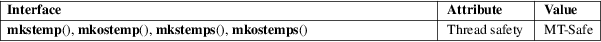

mkstemp, mkostemp, mkstemps, mkostemps − create a unique temporary file
Standard C library (libc, −lc)
#include <stdlib.h>
int
mkstemp(char *template);
int mkostemp(char *template, int
flags);
int mkstemps(char *template, int
suffixlen);
int mkostemps(char *template, int
suffixlen, int flags);
Feature Test Macro Requirements for glibc (see feature_test_macros(7)):
mkstemp():
_XOPEN_SOURCE >= 500
|| /* glibc >= 2.12: */ _POSIX_C_SOURCE >= 200809L
|| /* glibc <= 2.19: */ _SVID_SOURCE || _BSD_SOURCE
mkostemp():
_GNU_SOURCE
mkstemps():
/* glibc >= 2.19: */ _DEFAULT_SOURCE
|| /* glibc <= 2.19: */ _SVID_SOURCE || _BSD_SOURCE
mkostemps():
_GNU_SOURCE
The mkstemp() function generates a unique temporary filename from template, creates and opens the file, and returns an open file descriptor for the file.
The last six characters of template must be "XXXXXX" and these are replaced with a string that makes the filename unique. Since it will be modified, template must not be a string constant, but should be declared as a character array.
The file is created with permissions 0600, that is, read plus write for owner only. The returned file descriptor provides both read and write access to the file. The file is opened with the open(2) O_EXCL flag, guaranteeing that the caller is the process that creates the file.
The mkostemp() function is like mkstemp(), with the difference that the following bits—with the same meaning as for open(2)—may be specified in flags: O_APPEND, O_CLOEXEC, and O_SYNC. Note that when creating the file, mkostemp() includes the values O_RDWR, O_CREAT, and O_EXCL in the flags argument given to open(2); including these values in the flags argument given to mkostemp() is unnecessary, and produces errors on some systems.
The mkstemps() function is like mkstemp(), except that the string in template contains a suffix of suffixlen characters. Thus, template is of the form prefixXXXXXXsuffix, and the string XXXXXX is modified as for mkstemp().
The mkostemps() function is to mkstemps() as mkostemp() is to mkstemp().
On success, these functions return the file descriptor of the temporary file. On error, −1 is returned, and errno is set to indicate the error.
|
EEXIST |
Could not create a unique temporary filename. Now the contents of template are undefined. | ||
|
EINVAL |
For mkstemp() and mkostemp(): The last six characters of template were not XXXXXX; now template is unchanged. |
For mkstemps() and mkostemps(): template is less than (6 + suffixlen) characters long, or the last 6 characters before the suffix in template were not XXXXXX.
These functions may also fail with any of the errors described for open(2).
For an explanation of the terms used in this section, see attributes(7).

mkstemp()
POSIX.1-2001.
mkstemps()
BSD.
mkostemp()
mkostemps()
GNU.
mkstemp()
4.3BSD, POSIX.1-2001.
mkstemps()
glibc 2.11. BSD, Mac OS X, Solaris, Tru64.
mkostemp()
glibc 2.7.
mkostemps()
glibc 2.11.
In glibc versions 2.06 and earlier, the file is created with permissions 0666, that is, read and write for all users. This old behavior may be a security risk, especially since other UNIX flavors use 0600, and somebody might overlook this detail when porting programs. POSIX.1-2008 adds a requirement that the file be created with mode 0600.
More generally, the POSIX specification of mkstemp() does not say anything about file modes, so the application should make sure its file mode creation mask (see umask(2)) is set appropriately before calling mkstemp() (and mkostemp()).
mkdtemp(3), mktemp(3), tempnam(3), tmpfile(3), tmpnam(3)